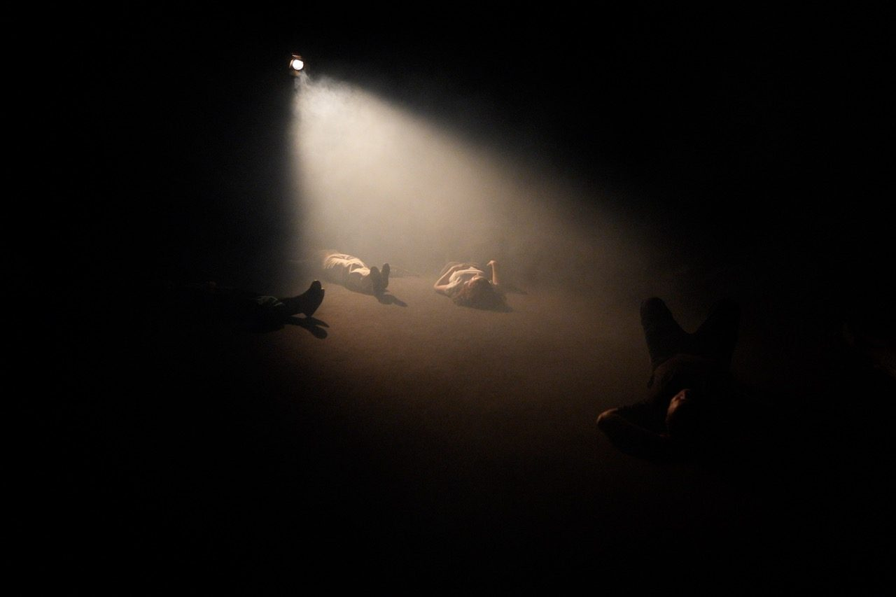
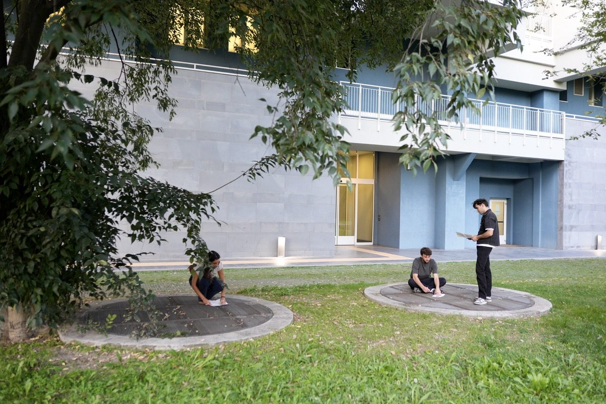
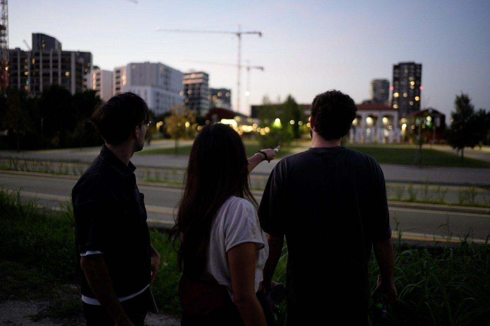
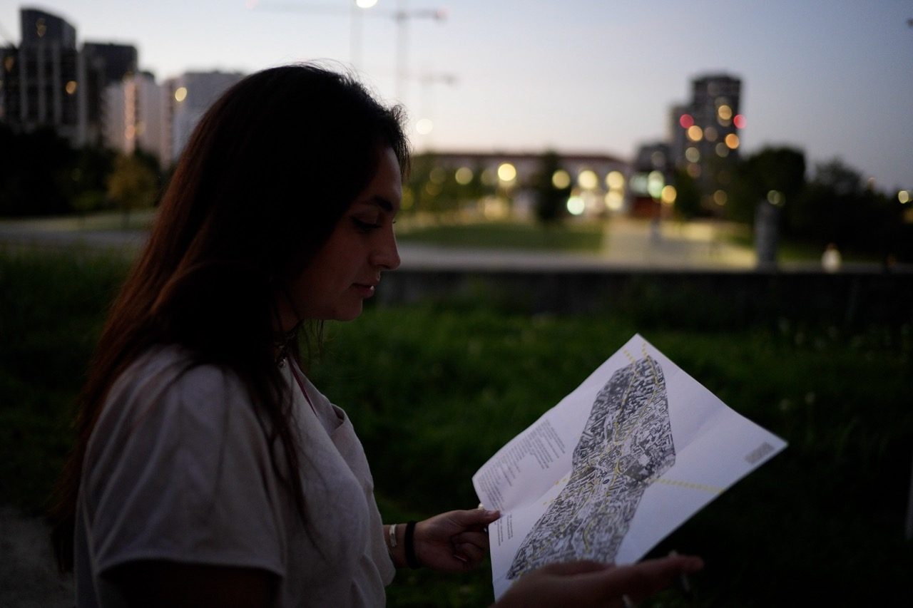
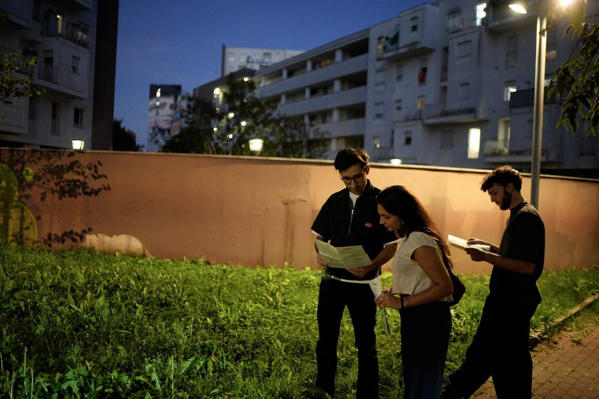
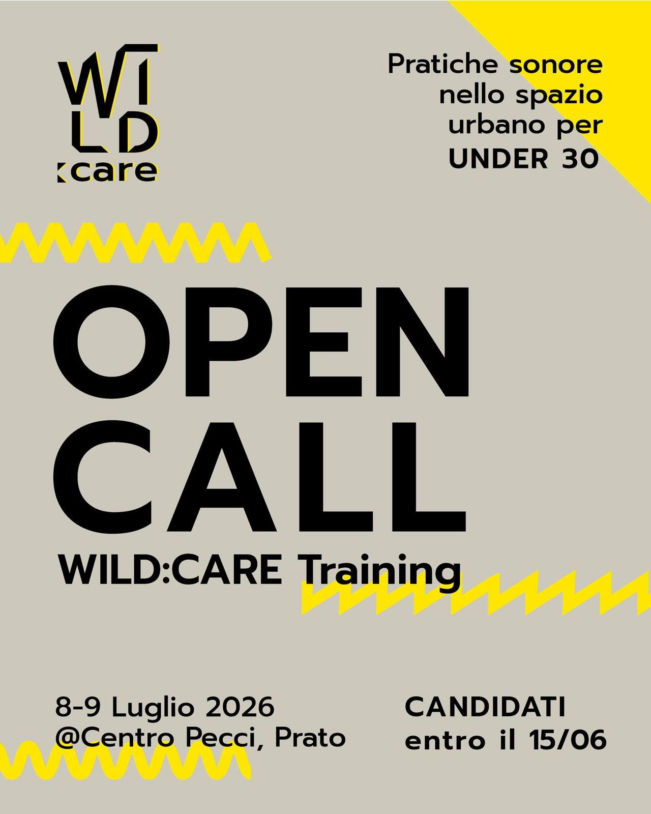

Tracce
Insieme ad altri, mappate uno stesso luogo. Non risolvete le vostre differenze.
Ciò che il progetto ha lasciato finora, e ciò che deve ancora arrivare. Ogni luogo è stato ascoltato da persone diverse.
ITA (lingua attuale)ENG
Tracce
Insieme ad altri, mappate uno stesso luogo. Non risolvete le vostre differenze.
Ciò che il progetto ha lasciato finora, e ciò che deve ancora arrivare. Ogni luogo è stato ascoltato da persone diverse.
2025Milano
Gallaratese, Milano. Indagine Milano – Festival Immersioni
Il punto da cui il metodo è partito. Un progetto sonoro partecipativo di Æ (Aldo Scarpitta e Marco Berni), prodotto dal Piccolo Teatro di Milano con Mare Culturale Urbano. Passeggiate al tramonto tra le torri, mappe sollevate verso l'ultima luce, una stanza buia in cui ascoltare.






Marzo 2026
Firenze e Berlino
Un partenariato su piccola scala Erasmus+ tra TAB Take Away Bibliographies (Firenze) e Comparative Research Network (Berlino), con Codesign Toscana. Dodici mesi per trasformare una pratica in un kit che altre persone possano usare senza di noi.
Aprile 2026Firenze
Società di Mutuo Soccorso di Rifredi, Firenze
Tre giorni tra i partner. Passeggiate d'ascolto, mappe sonore disegnate sulle fotografie aeree, le prime schede provate su di noi prima che su chiunque altro.
8 e 9 luglio 2026Prato
Centro Pecci, Prato
Una open call per under 30: pratiche sonore nello spazio urbano. Due giorni dentro il museo e intorno. Le schede e il mazzo di carte hanno incontrato per la prima volta persone esterne al progetto.

26 agosto 2026Gorizia
Palazzo de Grazia, Gorizia. In/visible Cities Festival
Æ ha portato il metodo in una città tagliata da un confine. Il telefono a bicchieri è due bicchieri e un filo; a Gorizia abbiamo ascoltato il filo. Un filo a terra, due fili annodati, tutti i fili in un nodo solo. Riusciamo ancora a sentirci?
10–13 dicembre 2026Firenze
In arrivo
Firenze. Il pilota fiorentino, con TAB Take Away Bibliographies
Quattro giorni in tutta la città: pratiche a cui partecipare, opere da ascoltare.
[date]Berlino
In arrivo
Berlino. Con Comparative Research Network
[luoghi e programma]
Febbraio 2027Firenze
In arrivo
Firenze e online. [data e luogo]
Il Listening Kit viene presentato, aperto a chiunque voglia usarlo.